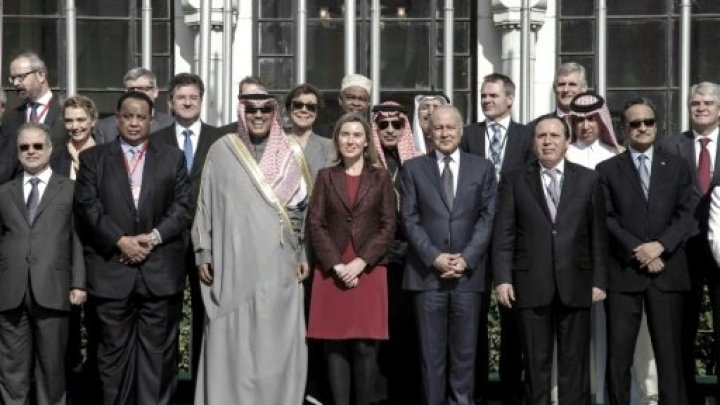
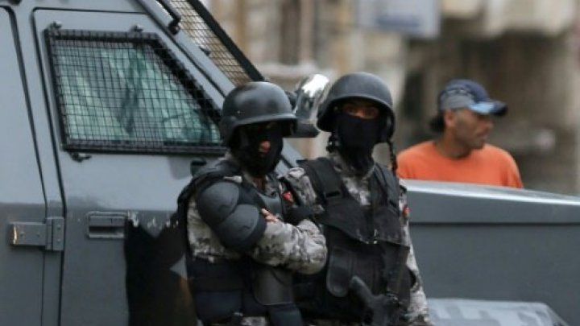
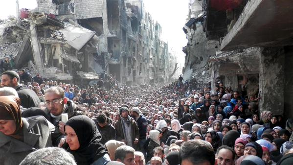
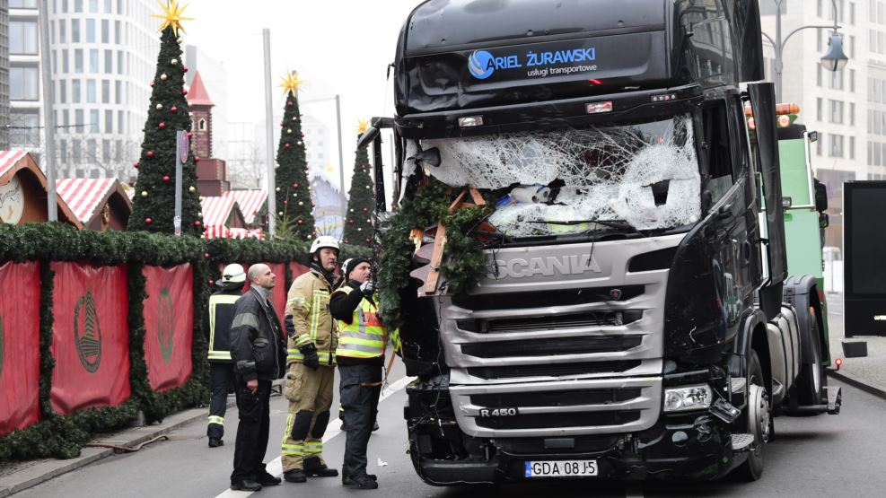

ألاخــبار السياسية
-
أردوغان وبوتين: اغتيال السفير الروسي في أنقرة يستهدف العلاقات بين البلدين
لتكمله الخبر
-

إدانة عربية و أوروبية "شديدة" لهجوم النظام السوري وحلفائه على شرق حلب
لتكمله الخبر
-

تنظيم "الدولة الإسلامية" يعلن مسؤوليته عن هجوم الكرك في الأردن
لتكمله الخبر
-

اجتماع روسي تركي إيراني في موسكو لاتخاذ "إجراءات ملموسة" بشأن سوريا
لتكمله الخبر
-
-
يعتبرهم 'كفارا'.. داعش يستهدف المدنيين عمدا في الموصل
لتكمله الخبر
-

الجيش الإسرائيلي يعتقل 7 فتية فلسطينيين بزعم قيامهم بتصنيع أسلحة
لتكمله الخبر
-

هجوم برلين .. أجهزة الأمن تلاحق طالب لجوء تونسيا
لتكمله الخبر
أردوغان وبوتين: اغتيال السفير الروسي في أنقرة يستهدف العلاقات بين البلدين
عدد مرات المشاهدهـ (963)
2016/12/30 20:30 PM
قال الرئيس التركي رجب طيب أردوغان إن اغتيال سفير روسيا في أنقرة "استفزاز الهدف منه الإساءة إلى عملية تطبيع العلاقات بين تركيا وروسيا". واتفق معه في ذلك نظيره الروسي فلاديمير بوتين الذي رأى بأنه "استفزاز" يهدف إلى تخريب العلاقات بين موسكو وأنقرة والجهود المبذولة لتسوية النزاع في سوريا.
اعتبر الرئيس التركي رجب طيب أردوغان مساء الإثنين أن اغتيال السفير الروسي في تركيا أندريه كارلوف هو "استفزاز" الهدف منه الإطاحة بـ"تطبيع" العلاقات بين أنقرة وموسكو.
وقال أردوغان في كلمة متلفزة "نعلم بأنه استفزاز الهدف منه الإساءة إلى عملية تطبيع العلاقات بين تركيا وروسيا".
من جهته قال المتحدث باسم الرئاسة التركية إن أردوغان اتصل بنظيره الروسي فلاديمير بوتين ليبلغه بتفاصيل الهجوم الذي أودى بحياة السفير الروسي لدى أنقرة.
ونقلت وكالة أنباء الأناضول عن إبراهيم كالين قوله "أجرى رئيسنا اتصالا هاتفيا بالرئيس الروسي بوتين لإبلاغه معلومات حول الهجوم".
ويأتي هذا الهجوم بينما تشهد العلاقات بين تركيا وروسيا تحسنا منذ أشهر بعد أزمة دبلوماسية خطيرة نجمت عن إسقاط سلاح الجو التركي في تشرين الثاني/نوفمبر 2015 طائرة حربية روسية فوق الحدود السورية التركية.
وروسيا هي الحليفة الرئيسية للنظام السوري الذي أصبح على وشك استعادة حلب ثاني مدن البلاد، بينما تدعم تركيا فصائل المعارضة التي تسعى إلى إسقاط الرئيس بشار الأسد.
بوتين: اغتيال كارلوف يهدف لتخريب علاقات بلاده بتركيا
من جهته وصف الرئيس الروسي فلاديمير بوتين اغتيال سفير بلاده لدى تركيا الإثنين بأنه "استفزاز" يهدف إلى تخريب العلاقات بين موسكو وأنقرة والجهود المبذولة لتسوية النزاع في سوريا، مشيرا من جهة ثانية إلى أن موسكو ستشارك أجهزة الأمن التركية في التحقيق.
وقال بوتين في تصريح بثه التلفزيون إن "الجريمة التي ارتكبت هي دون شك استفزاز يهدف إلى عرقلة تطبيع العلاقات الروسية-التركية وتعطيل عملية السلام في سوريا والتي تشارك فيها بقوة كل من روسيا وتركيا وإيران".
وأضاف خلال اجتماعه بوزير الخارجية سيرغي لافروف ومسؤولي الاستخبارات الداخلية والخارجية "لا يمكن أن يكون هناك إلا رد وحيد على هذا، ألا وهو تكثيف مكافحة الإرهاب والمجرمون سيشعرون بذلك".
وأوضح بوتين أن بلاده سترسل محققين إلى أنقرة بعدما وافق نظيره التركي رجب طيب أردوغان على طلب بهذا المعنى وجهه إليه الرئيس الروسي.
وقال "علينا أن نعرف من الذي حرك أيدي القتلة".
وقتل السفير الروسي أندريه كارلوف بعد إصابته برصاصات عدة أطلقها عليه شرطي تركي بينما كان يلقي كلمة خلال افتتاح معرض فني في العاصمة التركية. وقال الشرطي إنه قام بفعلته ثأرا لما يحصل في حلب.
وفي تسجيل فيديو للهجوم نشر على شبكات التواصل الاجتماعي، يظهر القاتل وهو يصرخ باللغة العربية أولا ثم باللغة التركية والسفير ممد أرضا بالقرب منه.
ويهتف الرجل الذي يرتدي بزة سوداء ويحمل مسدسا "الله أكبر" ويتحدث بالعربية عن "الذين بايعوا محمدا على الجهاد". ويكرر بعد ذلك مرتين باللغة التركية "لا تنسوا سوريا، لا تنسوا حلب". ويضيف أن "كل الذين يشاركون في هذا الطغيان سيحاسبون واحدا واحدا".
إعجاب
تعليق
مشاركة
إدانة عربية و أوروبية "شديدة" لهجوم النظام السوري وحلفائه على شرق حلب
عدد مرات المشاهدهـ (620)
2016/12/30 20:30 PM
اختتم وزراء خارجية الدول الأعضاء في الجامعة العربية والاتحاد الأوروبي اجتماعهم الثلاثاء ببيان أدانوا فيه "بشدة الهجوم المتعمد والعشوائي من قبل النظام (السوري) وحلفائه على حلب الشرقية"، داعين "كافة الأطراف لتأمين الإجلاء الطوعي والأمن من دون عقبات لكل المدنيين تحت إشراف دولي لأماكن من اختيارهم".
دان اجتماع وزراء خارجية الدول الأعضاء في الجامعة العربية والاتحاد الأوروبي، في ختام أعماله الثلاثاء، "بشدة الهجوم المتعمد والعشوائي من قبل النظام (السوري) وحلفائه على حلب الشرقية، واستهداف المدنيين والبنية التحتية الإنسانية".
وأكد الوزراء في بيان أصدروه بعد اجتماع شاركت فيه وزيرة خارجية الاتحاد الأوروبي فيديريكا موغريني أنهم "يعبرون عن قلقهم العميق بشأن الوضع في حلب، ويدينون بشدة الهجوم المتعمد والعشوائي على حلب الشرقية من قبل النظام وحلفائه، وكذلك استهداف المدنيين والبنية التحتية الإنسانية".
ودعا البيان "كافة الأطراف لتأمين الإجلاء الطوعي والأمن من دون عقبات لكل المدنيين تحت إشراف دولي لأماكن من اختيارهم".
ودان الوزراء كذلك "بشدة الأعمال الإرهابية والجرائم ضد المدنيين التي يرتكبها تنظيم ’الدولة الإسلامية‘، والمجموعات الأخرى المصنفة إرهابية من قبل الأمم المتحدة في جميع أنحاء سوريا".
وكانت موغيريني دعت في كلمة ألقتها في افتتاح الاجتماعات بعد الظهر إلى المصالحة في سوريا.
وقالت "يمكننا معا، عربا وأوروبيين، بالتنسيق مع المجتمع الدولي وتحت إشراف الأمم المتحدة، الاتفاق على إطار لمصالحة بين السوريين، لنحول هذه الحرب بالوكالة إلى سلام بالوكالة".
وحض الجيش السوري الثلاثاء آخر المقاتلين والمدنيين المحاصرين في مدينة حلب إلى مغادرتها، تمهيدا لإعلان سيطرته على كامل المدينة، في انتصار يعد الأبرز لدمشق منذ بدء النزاع قبل نحو ست سنوات.
وتبنى مجلس الأمن الدولي الإثنين بالإجماع مشروع قرار يدعو إلى نشر مراقبين لمراقبة عمليات الإجلاء من شرق حلب والاطمئنان على "سلامة المدنيين" الباقين داخلها.
ويأتي نداء الجيش بعد تمكن وحداته خلال شهر من استعادة السيطرة على غالبية الأحياء الشرقية في حلب، والتي كانت تحت سيطرة الفصائل المقاتلة منذ العام 2012، تاريخ انقسام المدينة بين الطرفين.
ومنذ الخميس، أحصت اللجنة الدولية للصليب الأحمر إجلاء 25 ألف شخص من آخر جيب تحت سيطرة الفصائل المقاتلة في حلب منذ بدء عملية الإجلاء الخميس، وفق ما ذكرت متحدثة إعلامية لوكالة فرانس برس الثلاثاء، متحدثة عن "آلاف" ما زالوا ينتظرون إجلاءهم داخل حلب.
إعجاب تعليق
مشاركة
تنظيم "الدولة الإسلامية" يعلن مسؤوليته عن هجوم الكرك في الأردن
عدد مرات المشاهدهـ (312)
2016/12/30 20:30 PM
أعلن تنظيم "الدولة الإسلامية" الثلاثاء مسؤوليته عن إطلاق النار الذي وقع الأحد في محافظة الكرك الأردنية وأسفر عن مقتل عشرة أشخاص على الأقل.
تبنى تنظيم "الدولة الإسلامية" الثلاثاء إطلاق النار في قلعة بمدينة الكرك في جنوب الأردن والذي قتل خلاله عشرة أشخاص على الأقل بينهم سبعة رجال أمن وسائحة كندية، و34 جريحا.
إعجاب
تعليق
مشاركة
اجتماع روسي تركي إيراني في موسكو لاتخاذ "إجراءات ملموسة" بشأن سوريا
عدد مرات المشاهدهـ (620)
2016/12/30 20:30 PM
يجتمع الثلاثاء في موسكو وزراء خارجية إيران وتركيا وروسيا بشأن النزاع في سوريا، وسيعقد هذا الاجتماع غداة مقتل السفير الروسي في أنقرة، والذي اعتبره وزير الخارجية الروسي محاولة لعرقلة الحرب ضد الإرهاب في سوريا.
قال وزير الخارجية الروسي سيرغي لافروف في بيان إن اجتماعا مقررا عقده في موسكو الثلاثاء بين وزراء خارجية إيران وتركيا وروسيا يهدف لاتخاذ إجراءات ملموسة بشأن سوريا.
إعجاب
تعليق
مشاركة
 1
1 2
2 3
3 4
4 5
5 6
6 7
7 8
8